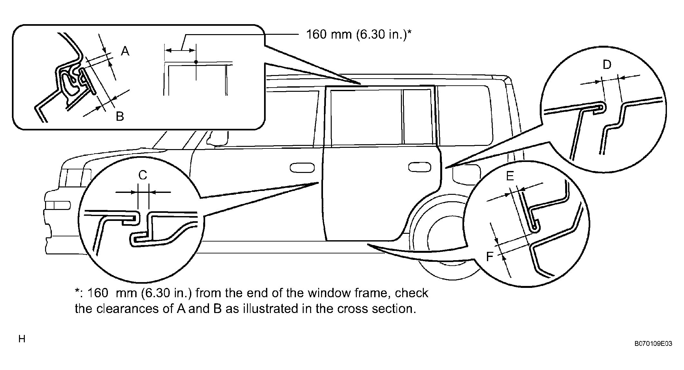

On-Vehicle Inspection
- INSPECT REAR DOOR PANEL SUB-ASSEMBLY LH
- Check that the clearance measurements of areas A to F are within the standard range.

Courtesy of © TOYOTA, LICENSE AGREEMENT TMS1002Standard measurement
STANDARD MEASUREMENTArea Specified Condition A 5.2 +- 1.5 mm (0.205 +- 0.059 in.) B 6.2 +- 1.5 mm (0.244 +- 0.059 in.) C 5.4 +- 1.5 mm (0.213 +- 0.059 in.) D 4.3 +- 0.0 mm (0.169 +- 0.000 in.) E 6.4 +- 0.0 mm (0.252 +- 0.000 in.) F 6.1 +- 1.5 mm (0.240 +- 0.059 in.)
- Check that the clearance measurements of areas A to F are within the standard range.